01. jev_triage
The owner asks for an export dry-run flag and updated usage text. Jev marks both topics as relevant to the request.
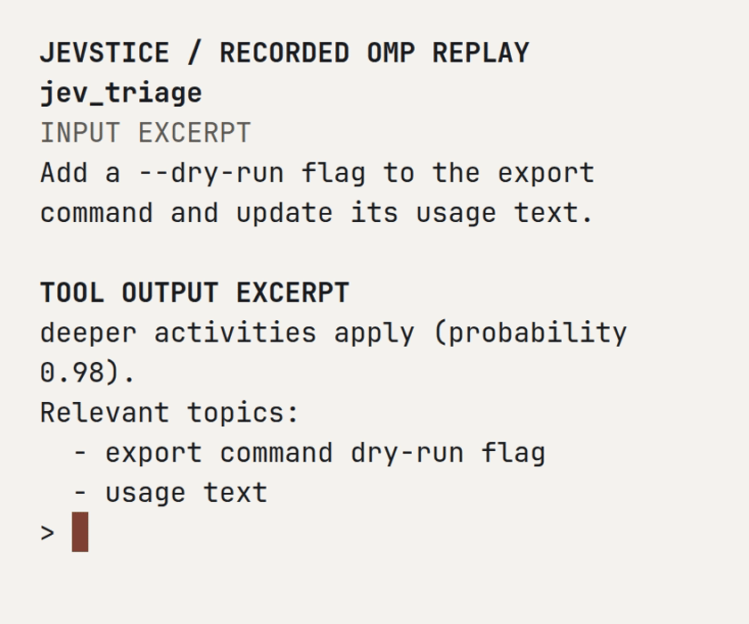
These excerpts come from separate oh-my-pi sessions recorded on November 15 and 18, 2026. The recordings are arranged by task stage. Each replay shows selected inputs and outputs with edited timing.
Every clip starts as a still. Play it inline or read the text extract. Jevstice’s findings do not grant permission or stop the agent from working.
The owner asks for an export dry-run flag and updated usage text. Jev marks both topics as relevant to the request.

Jev leaves the first submission unapproved. The second omits the proposed exit-status requirement and gets requirements approval; neither call tests the flag.
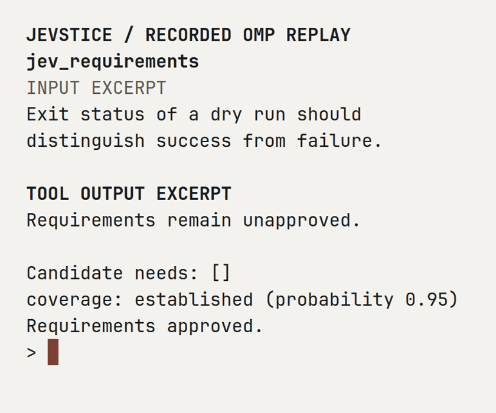
Jev approves the outline, both step details and the whole plan. The replay ends at plan review, before any implementation result is shown.
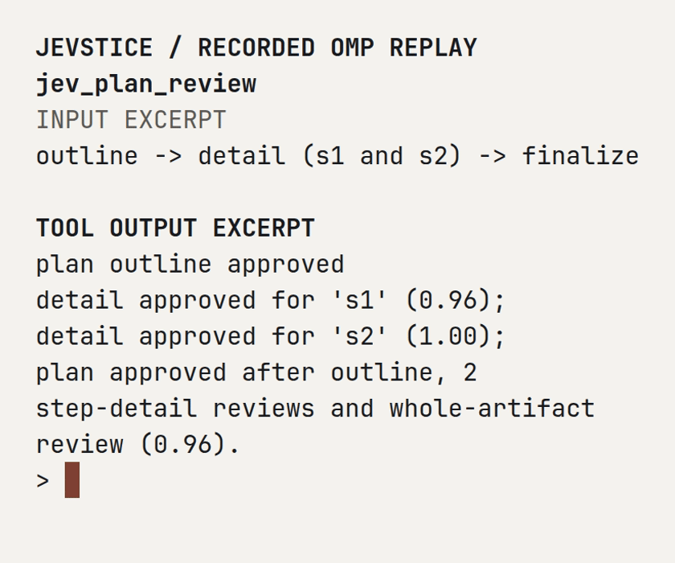
Jev rejects an incomplete quotation. When the agent submits the full owner message, Jev records the new objective: fix the login redirect instead of adding the export flag. Previous approvals no longer apply.
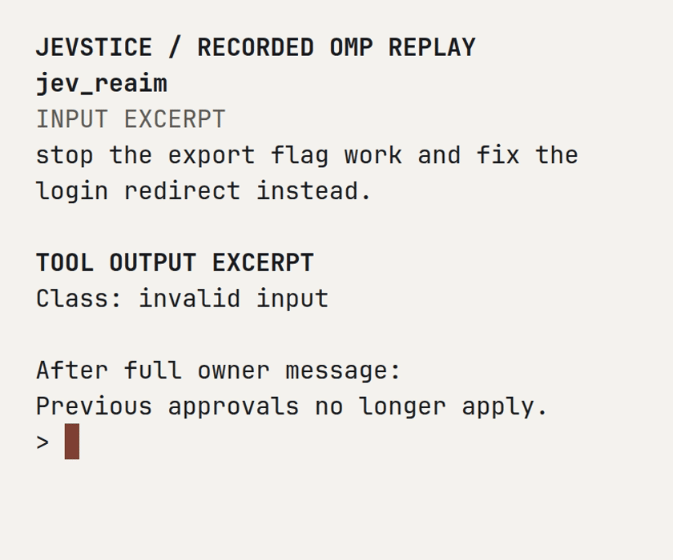
The agent lists archived sources and reads the original owner prompt. The archive identifies where the text came from; it does not verify its claims or grant permission.
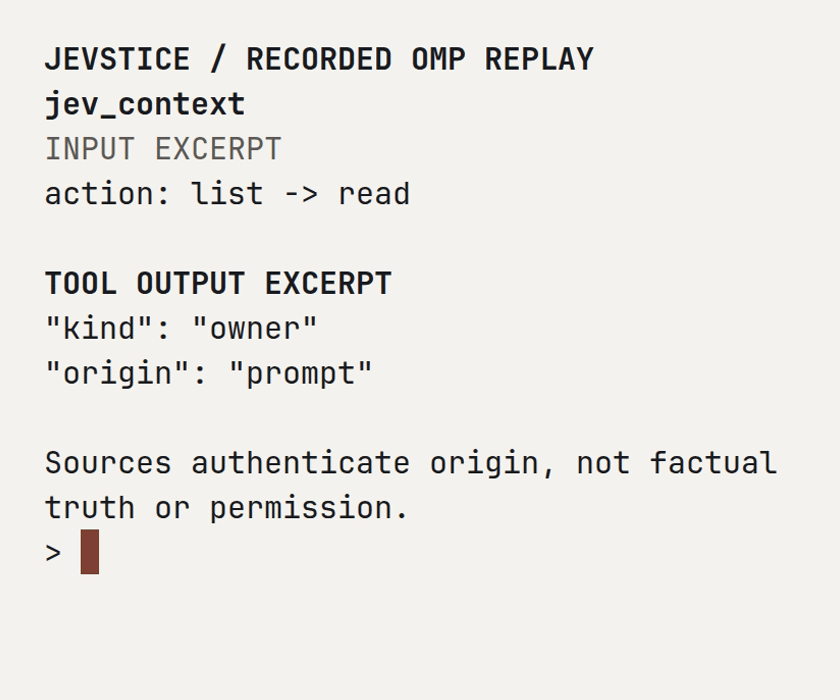
Asked which source best answers a Node.js output question, Jev picks the POSIX utility conventions over the Node.js documentation. That ranking does not establish what Node.js does.
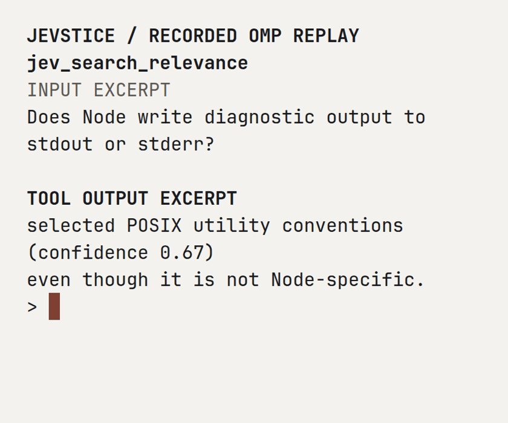
Asked to choose an output stream for progress messages, the judge favors stdout at 0.54 confidence. The result is inconclusive, so the call does not settle the choice.
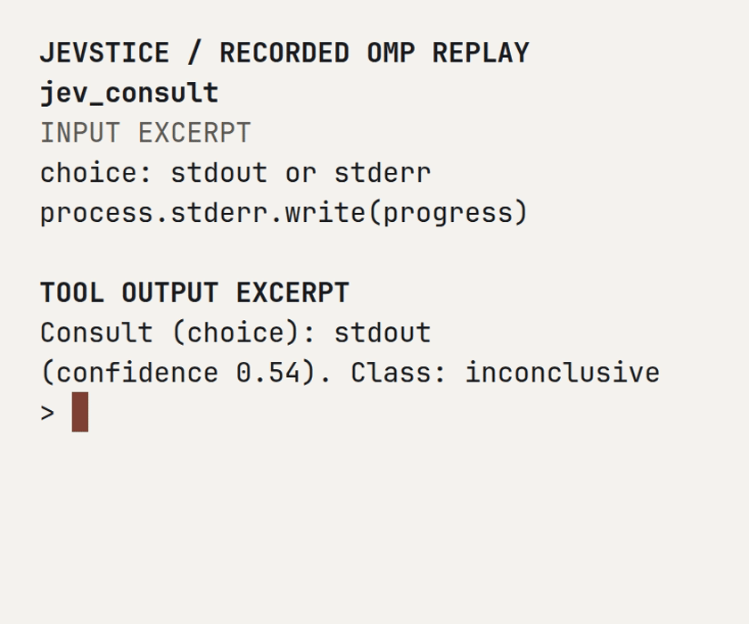
The agent asks whether adding dry-run parsing follows the approved plan. The judge answers on_course, but its 0.55 confidence falls below the 0.7 threshold. Jev records no approval.
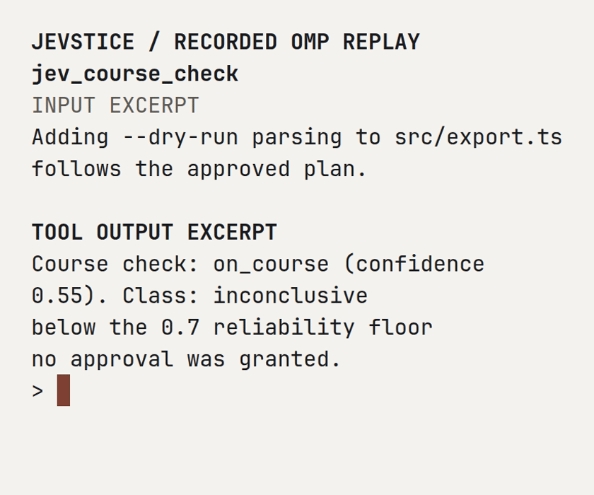
The agent submits an export-command diff and two passing tests. The judge calls the change sound at 0.46 confidence. The review is inconclusive: it establishes no defect and does not approve completion.
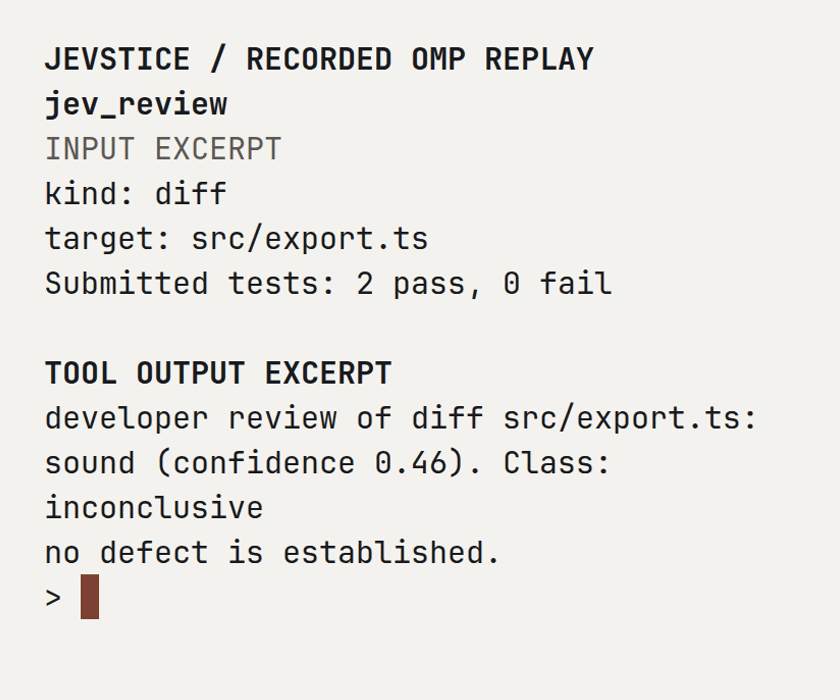
A separate test log records six passes. The outcome check counts four requirements as met and leaves four unresolved, so the check is inconclusive.
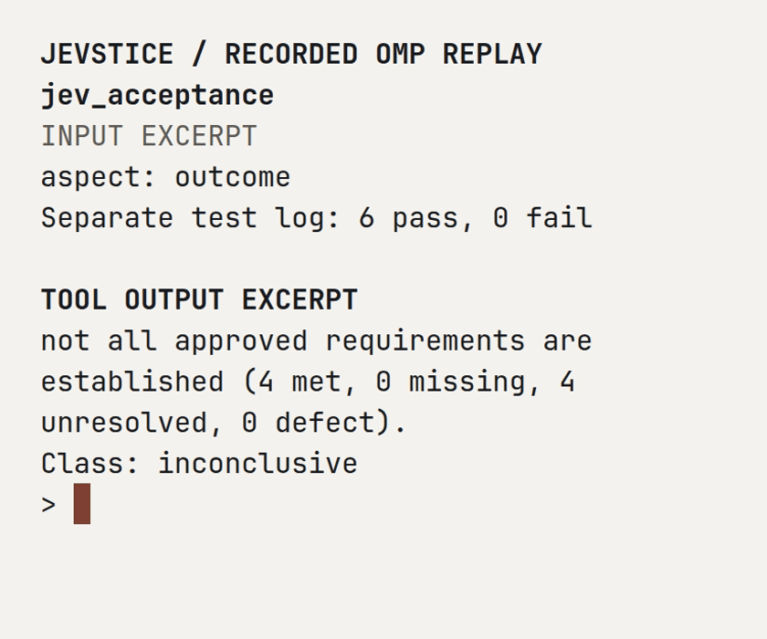
The reviewer flags a release note for using passive voice against the submitted rule. The extract shows the first finding; later checks in that session did not record a clean review.
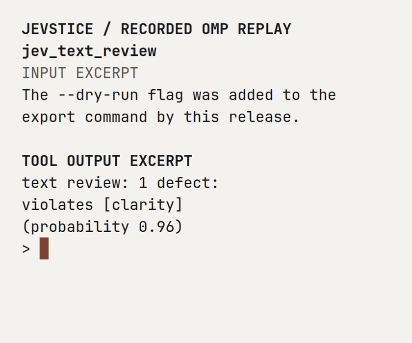
Jev flags an unsupported version claim about the dry-run flag and asks for independent evidence or removal. A narrower submission remains inconclusive; neither call establishes the claim.
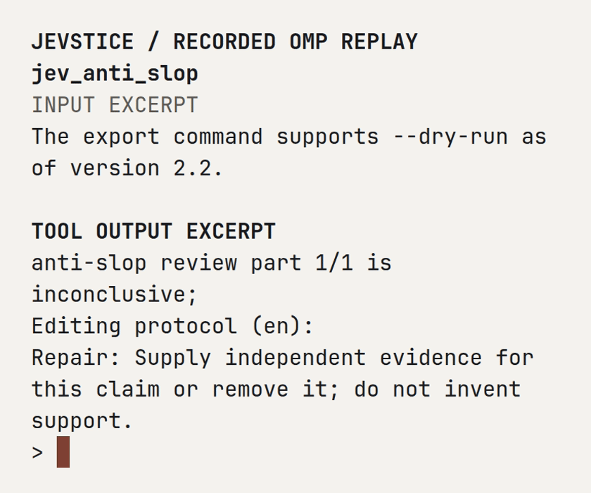